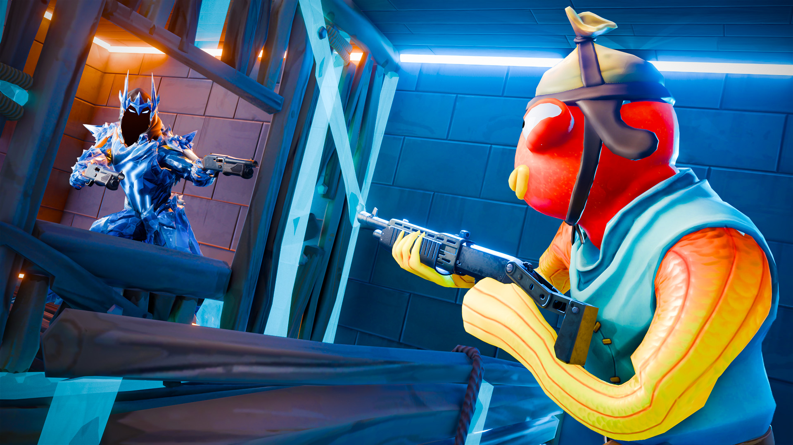

Box Fight Blitz
island code 3880-3821-8716
Box Fight Blitz is a game that has been iterated upon and reworked several times over, creating what is now a one-of-a-kind mode that blends box fights with arena PvP. Commissioned by Klarque Clint, a content creator and friend of mine, I worked to redesign and revamp the old version of this game called "Cracked Colosseum."

Overview
This project is now a multi-year collaboration where I would semi-regularly overhaul the design of the arena and rework core mechanics to provide a new and fresh experience for Klarque's online community and whoever else may happen upon the game. Below, you'll see groups of images showing snippets of the progress made between updates.
Core Gameplay Loop
The core gameplay loop of Box Fight Blitz (BFB) begins in a lobby where players can spend blitz tokens on special loadouts for their upcoming box fight. A timer runs in the background that will activate an RNG sorting system that matchmakes players into their boxes, and then each box fight begins. The victors for the box fights move into the arena below as their box explodes and the losing player gets sent back to the lobby until the next matchmaking attempt begins. Eliminating players grants blitz tokens and gives the player more choice between deaths.
Blitz Rank System
There's another system inspired by the Blitz Rank mechanics from Epic Games' Blitz Royale gamemode. As the player accumulates survival time and eliminations between lives, they rack up points that will grant them better weapons. Reaching each rank can grant a player a slew of powerful and fun weapons which radically alter playstyles. This isn't an original mechanic per se, but I did recreate it and adjust it for our experience.
Arena Progress — Ice & Snow
Chapter 6 Inspired Arena
Chapter 2 Inspired Arena
Early Dev Screenshots
Wide editor and aerial shots showing how the different zones fit together inside the surrounding colosseum walls across several rebuilds.